Objetivo: Testar o painel administrativo do ponto de vista de um group_admin (influencer/cliente), que e o papel de menor privilegio. Verificar se o cliente consegue usar o sistema normalmente, sem acesso a funcionalidades internas.
Usuario: icarocr30@gmail.com — Group Admin do grupo Rajizito Tips
Escopo: Todas as paginas acessiveis pela sidebar + rotas internas (admin-users, jobs, bots, settings/telegram)
Ao acessar o Dashboard como group_admin, a pagina mostra apenas a mensagem
de erro "column members.vencimento_at does not exist" com um botao "Tentar
Novamente". O dashboard e a primeira pagina que o cliente ve apos login —
esta totalmente inutilizavel. A API /api/dashboard/stats retorna 500.
Evidencia
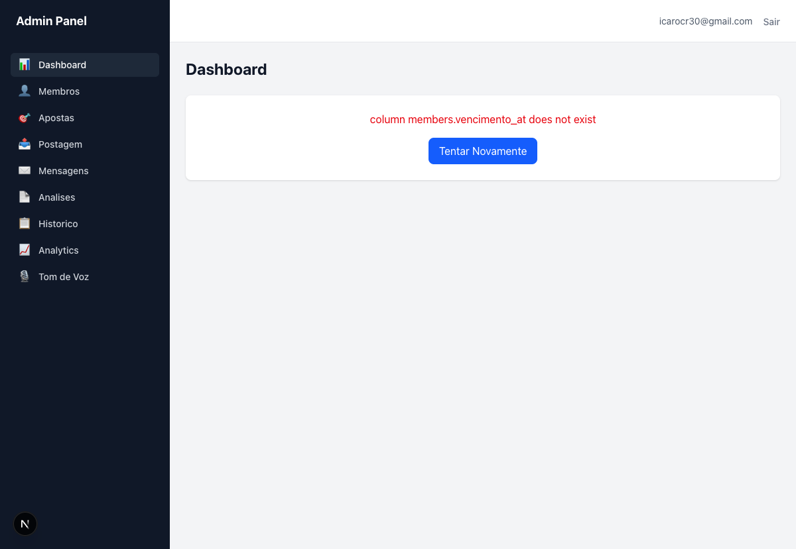
Sugestao de Fix
/api/dashboard/stats referencia a coluna members.vencimento_at
que nao existe na tabela. Verificar se a coluna foi renomeada ou se a migration nao foi aplicada.
Corrigir a query para usar o nome correto da coluna (provavelmente subscription_end_date
ou similar).
O group_admin consegue acessar /settings/telegram que exibe formularios
de Sessao MTProto (conta do founder), Bot Token e Founder Chat IDs.
Embora as APIs retornem 403, a pagina inteira renderiza com labels e placeholders que
revelam detalhes de infraestrutura interna. Um cliente (influencer) nao deveria ver essa pagina.
Evidencia
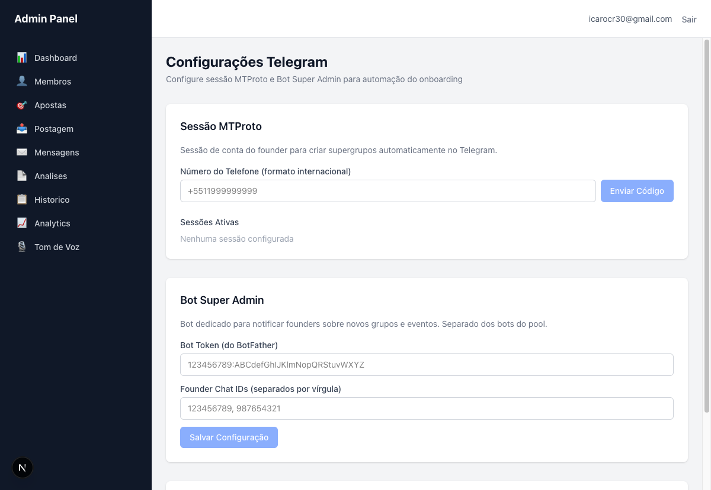
Sugestao de Fix
group_admin para
/dashboard ao acessar /settings/telegram. Idealmente, rotas super_admin-only
devem ter guard no layout. Considerar um wrapper SuperAdminGuard reutilizavel.
O group_admin pode navegar para /admin-users. A API retorna 403 e mostra
"Insufficient permissions", mas a pagina renderiza com o header "Admin Users",
tabela vazia e botao "Criar Admin User" visivel. Um cliente nao deveria
saber que essa pagina existe.
Evidencia
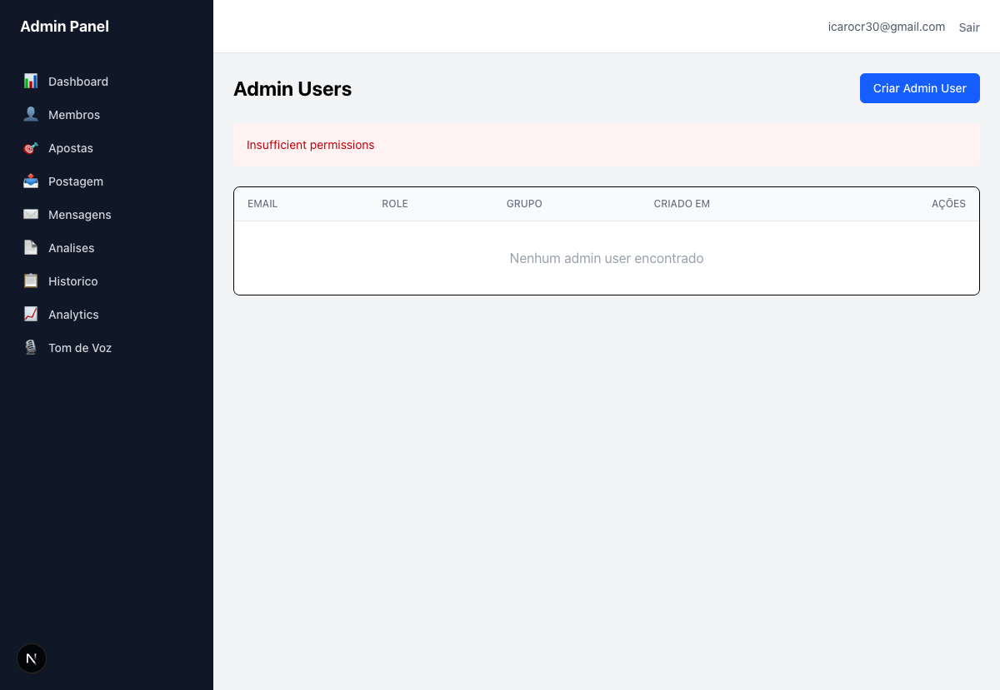
Sugestao de Fix
group_admin no frontend ao tentar acessar rotas exclusivas de
super_admin. Esconder o botao "Criar Admin User" quando role != super_admin.
O group_admin pode navegar para /job-executions. A API retorna 403 mas a
pagina renderiza com cards "Jobs Monitorados: 0", "Status Geral: Saudavel",
"Taxa de Sucesso: 100%" e filtros. Informacoes operacionais internas expostas ao cliente.
Evidencia
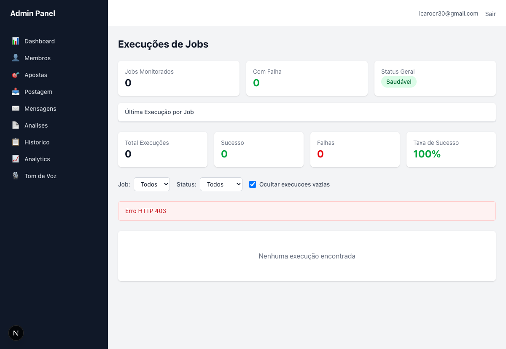
Sugestao de Fix
super_admin deveria
acessar /job-executions, /bots, /settings/telegram,
/admin-users.
A pagina /tone (sidebar) mostra "Selecione um grupo para configurar o
tom de voz" mas nao ha dropdown de grupo porque a chamada /api/groups
retorna 403 para group_admin. O Tom de Voz so funciona pelo caminho
/groups/:id/tone. Para o influencer, o link na sidebar e um dead-end.
Evidencia
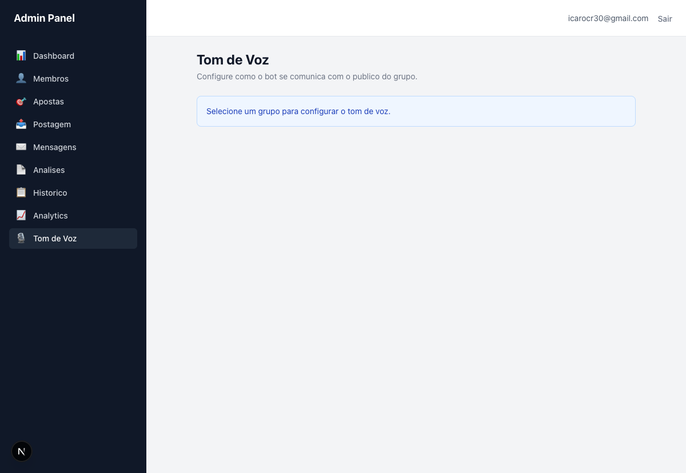
Sugestao de Fix
/api/groups retornar apenas o grupo do group_admin (respeitando group_filter)/groups/:groupId/tone quando role=group_admin (ja que ele so tem 1 grupo)
Toda navegacao dispara 2x chamadas para /api/groups que retornam
403 para group_admin. Isso aparece em Apostas, Postagem, Mensagens,
Tom de Voz, etc. Sao 12+ erros 403 no console durante uma sessao normal.
Impacta debuggability e pode confundir developers.
Evidencia
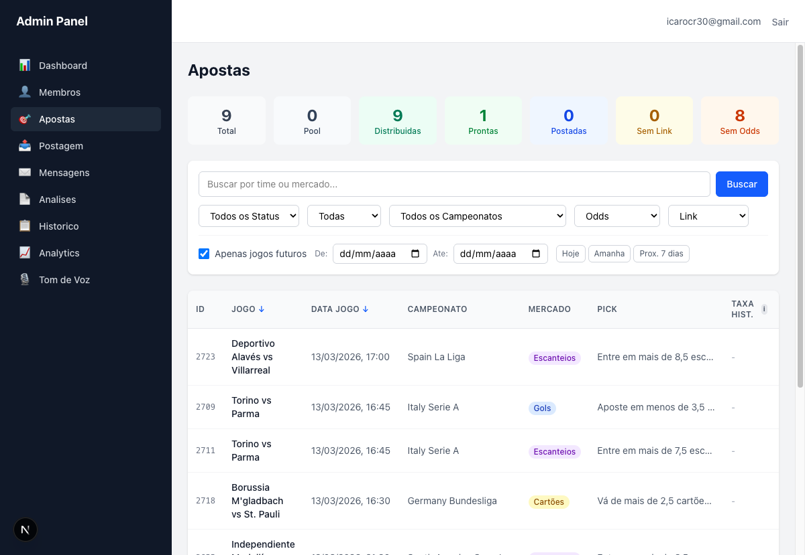
Sugestao de Fix
/api/groups (provavelmente o group selector ou layout) deveria
verificar o role antes de fazer a chamada. Se group_admin, usar o group_id
do contexto de auth em vez de chamar /api/groups.
Na pagina de detalhe do grupo, o group_admin ve o botao "Excluir"
em vermelho. Se a API bloquear, e apenas um problema de UX. Se nao bloquear,
e um problema de seguranca grave — o influencer poderia excluir seu proprio grupo.
Evidencia
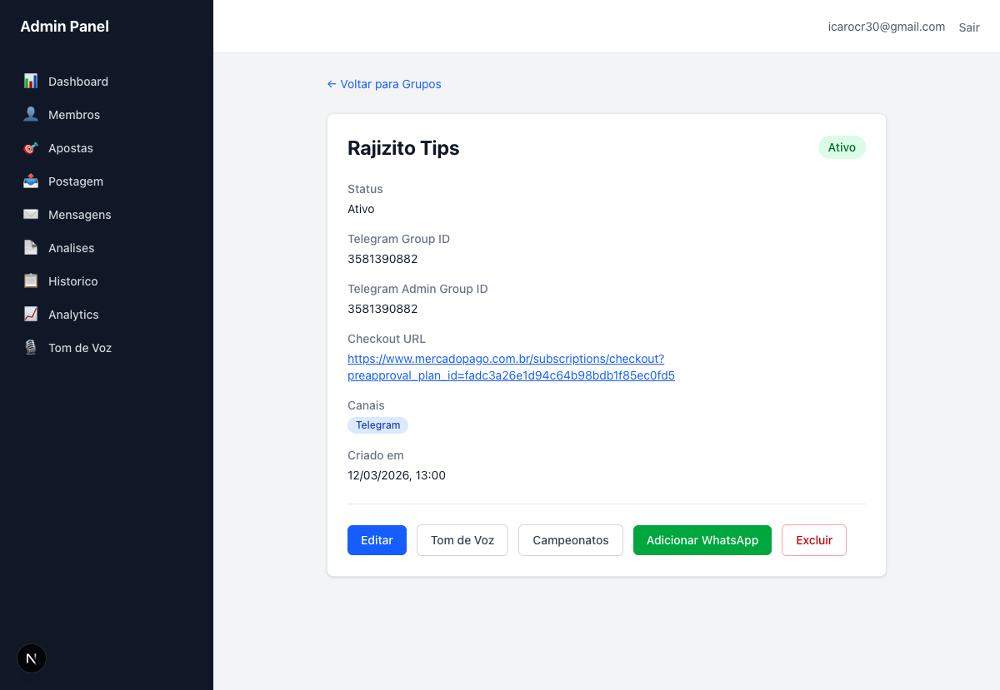
Sugestao de Fix
group_admin no frontend. Verificar tambem se a
API PATCH/DELETE bloqueia group_admin de excluir.
Na listagem de grupos, o group_admin ve o botao "Novo Grupo".
Um influencer nao deveria poder criar novos grupos — isso e funcao do
super_admin (onboarding).
Evidencia
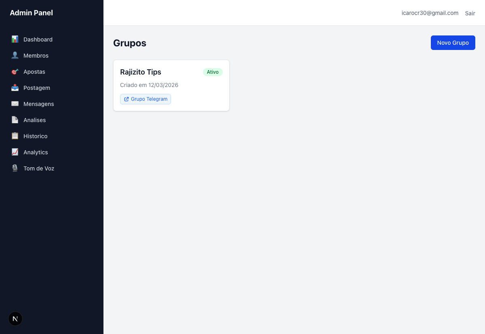
Sugestao de Fix
group_admin. Apenas super_admin deve ver esse botao.
O Historico de Postagens lista a aposta 2711 (Torino vs Parma) com status "Pendente" e "Postado em: —". Os contadores mostram "Total Postadas: 0" mas a aposta aparece na tabela. Se total postadas = 0, a tabela deveria estar vazia ou a aposta deveria ser filtrada.
Evidencia
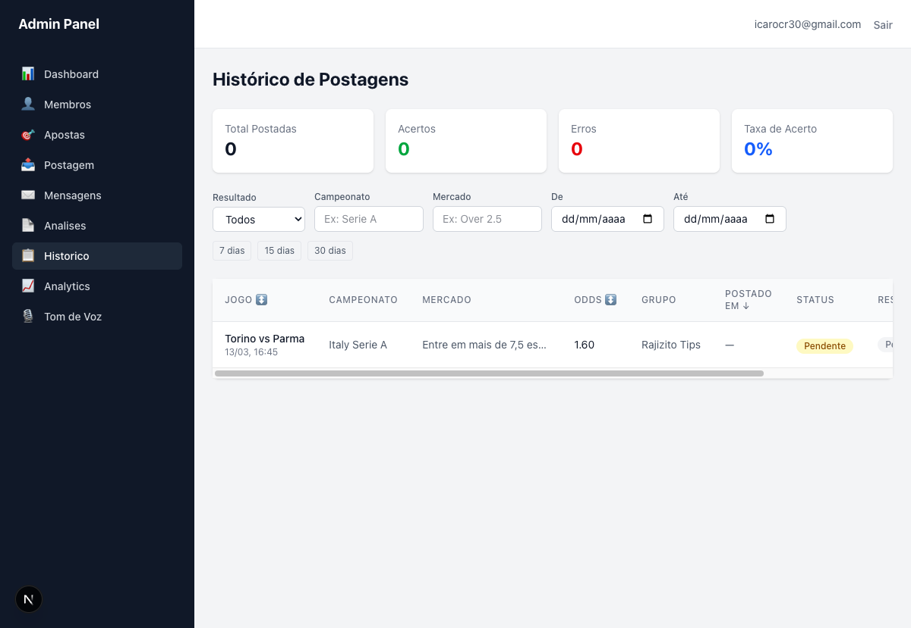
Sugestao de Fix
bet_status. Se
"Total Postadas = 0", apostas com status != 'posted' nao deveriam aparecer na
lista, ou o contador deveria refletir o total de apostas listadas (nao apenas as postadas).
O grupo Rajizito Tips mostra Telegram Group ID e Telegram Admin Group ID
ambos como 3581390882. Normalmente o grupo publico e o admin deveriam ser
supergrupos diferentes.
Evidencia
Sugestao de Fix
O membro @marcelomar1121 esta ativo desde 12/03/2026 mas a coluna Vencimento
mostra "-". Membros ativos pagantes deveriam ter data de vencimento da assinatura.
Evidencia
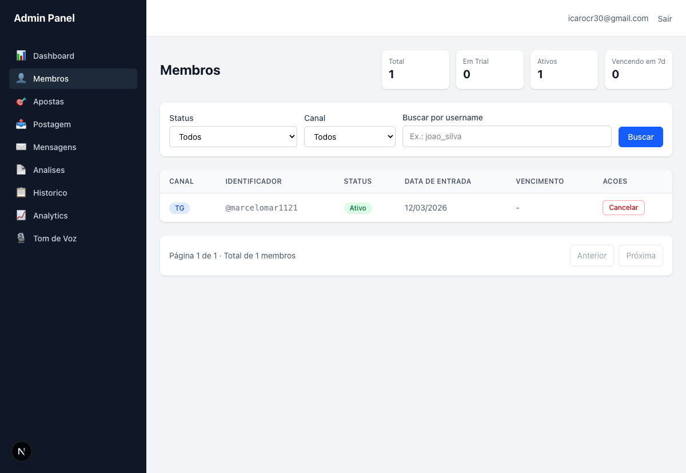
Sugestao de Fix
subscription_end_date esta sendo populado pelo webhook do
Mercado Pago. Pode ser que ativacao manual nao defina vencimento. Mostrar
"Sem vencimento" em vez de "-" para membros ativados manualmente.
A pagina /bots mostra a mensagem "Insufficient permissions" mas renderiza
o layout da pagina incluindo sidebar e header. Nao e tao grave quanto as outras paginas
admin-only, pois mostra um bloqueio visivel, mas o group_admin ainda nao deveria
conseguir navegar ate essa rota.
Evidencia
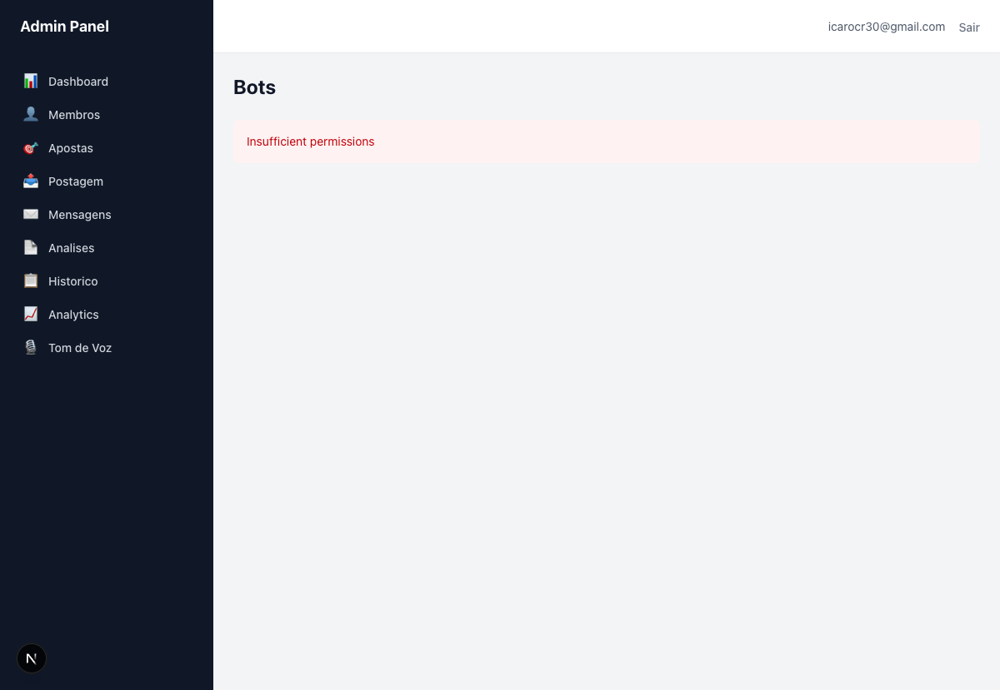
Sugestao de Fix
/bots no mesmo guard de role que bloqueia as demais rotas admin-only.
Redirecionar para /dashboard em vez de mostrar a mensagem de erro.
Isolamento de dados: O group_admin so consegue ver dados do seu proprio grupo (Rajizito Tips). O isolamento de dados esta funcionando corretamente em todas as paginas testadas.
Principal problema: A ausencia de guards de role no frontend permite que o group_admin acesse rotas internas (/settings/telegram, /admin-users, /job-executions, /bots). As APIs bloqueiam corretamente (403), mas a UI renderiza com informacoes parciais.
Impacto no cliente: O dashboard quebrado (CRASH-001) e o problema mais urgente pois impede o uso basico do sistema. Os demais problemas de autorizacao afetam a experiencia mas nao bloqueiam funcionalidades core.
Comparacao com Audit v1: O audit anterior (super_admin) encontrou 13 problemas. Este audit (group_admin) encontrou 12 problemas, sendo a maioria relacionados a falta de guards de frontend para role. Os problemas sao complementares — corrigir ambos os conjuntos garantiria uma experiencia solida para ambos os roles.